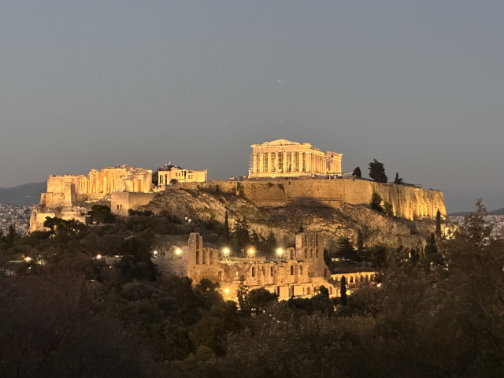
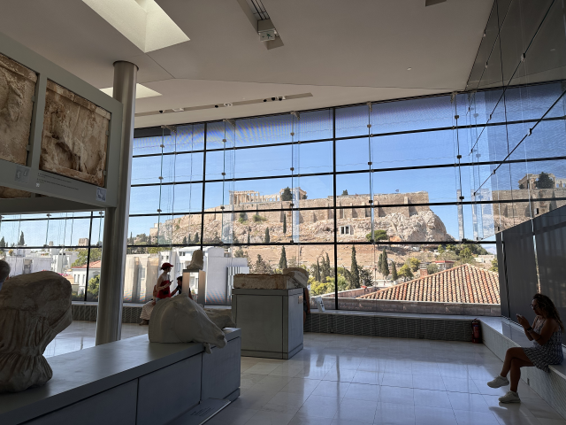
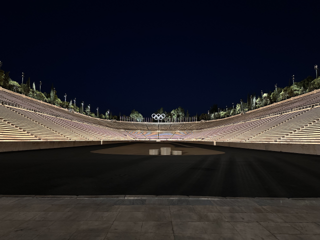
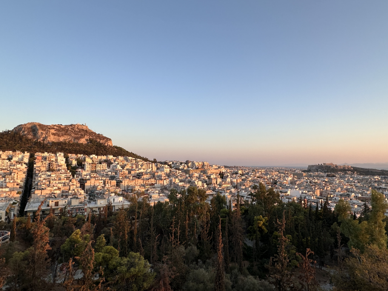
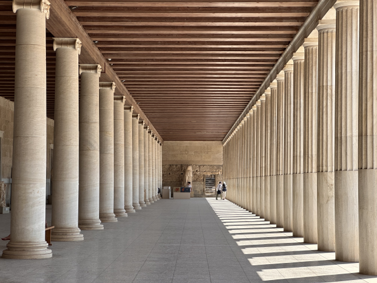
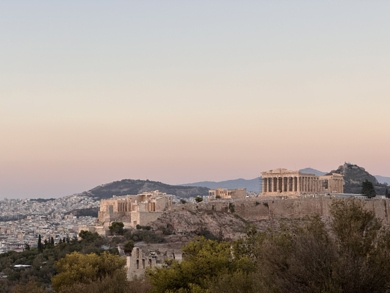
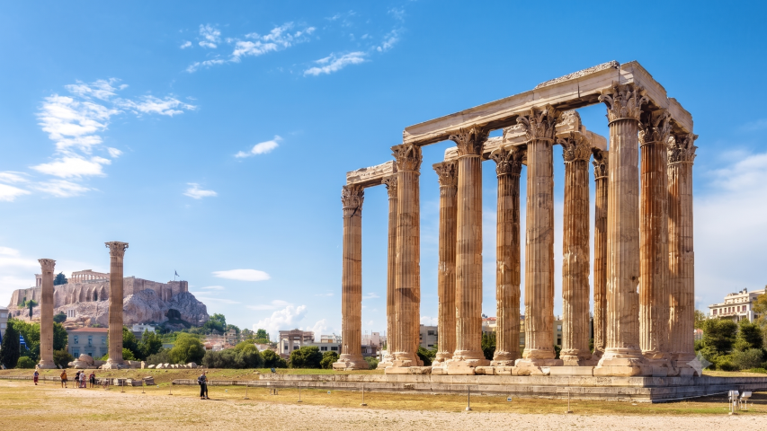

💡 雅典獨旅行前懶人包 💡 Athens Solo Travel Quick Info
章節導覽Table of Contents
🛑 雅典獨旅防雷與隱藏密技 🛑 Athens Solo Travel Hacks & Hidden Tips
🎫 考古大景點免費入場神招 Free Entry Hack for Archaeological Sites
除了一年當中的特定節日，每年 11 月至隔年 3 月的每個月第一、第三個週日為免費開放日，冬令獨旅千萬別錯過！詳情請見官網。 Aside from specific holidays, the first and third Sundays of every month from November to March are free admission days. Don't miss this if you travel in winter! Details on the official website.
🎬 雅典的浪漫夕照祕境 Romantic Sunset Secret Spots
想看震撼的衛城日落不用花大錢去景觀餐廳，菲力波普山與利卡維多斯山都是站長親測視野極佳的免費私房制高點。 You don't need to spend a fortune at rooftop restaurants to see a stunning Acropolis sunset. Philopappou Hill and Mount Lycabettus are both tested and proven free viewpoints with spectacular panoramas.
🗺️ 必做體驗：雅典 8 大絕美景點 🗺️ Must-Do: 8 Beautiful Spots in Athens
雅典是一座集西方古典文明神廟與現代地中海風情於一體的露天博物館。以下整理出你此生必訪的 8 大歷史人文奇景： Athens is an open-air museum combining Western classical temples and modern Mediterranean vibes. Here are the top 8 historical and cultural wonders you must visit in your lifetime:

1. 雅典衛城 (Acropolis of Athens) 1. Acropolis of Athens
雅典衛城是西方文明的耀眼搖籃，巍峨聳立於突出的石灰岩山丘上。穿過氣勢磅礡的衛城山門，雄偉的帕德嫩神廟與精緻的伊瑞克提翁神廟少女門廊隨即映入眼簾。漫步在歷經數千年風霜的巨石基座間，遠眺無垠的愛琴海與整座白色城市，巨柱帶來的視覺震撼排山倒海而來，是獨旅必訪的奇蹟。 The Acropolis is the dazzling cradle of Western civilization, towering majestically on a prominent limestone hill. Passing through the monumental Propylaea gate, the magnificent Parthenon and the exquisite Caryatid porch of the Erechtheion immediately catch your eye. Strolling among the ancient massive stone foundations and overlooking the boundless Aegean Sea and the white city, the visual impact of the colossal pillars is overwhelming. A must-visit miracle for solo travelers.
💭 Bryan 親測：最震撼的反倒入口層巒疊嶂的神廟巨柱入口，有種在埃及神廟的錯錯覺(雖然我還沒去過埃及😅)很難想像千年前當這裡還沒被炸過前的樣子會是多麼的壯觀！記得一定要提前訂票！ 💭 Bryan's take: The most shocking part is actually the cascading massive pillars at the entrance, giving an illusion of an Egyptian temple. It's hard to imagine how spectacular it was before the explosion centuries ago! Remember to book tickets in advance!

2. 雅典衛城博物館 (Acropolis Museum) 2. Acropolis Museum
衛城博物館是一座極具現代設計感的考古藝術殿堂，緊鄰衛城山腳。館內採用大量通透的玻璃地板，讓遊客能直接俯瞰地底的古城遺址。頂層的落地窗全景展廳更以一比一的空間比例，完美展示了帕德嫩神廟的神裝浮雕，在耀眼的希臘陽光下與不遠處的真實衛城交相輝映，動線規劃極佳。 The Acropolis Museum is a highly modern archaeological art palace located right at the foot of the Acropolis. The museum features transparent glass floors, allowing visitors to overlook the ancient city ruins below. The top-floor panoramic gallery flawlessly displays the Parthenon's friezes in a one-to-one spatial ratio, echoing the real Acropolis bathed in the dazzling Greek sunshine. Excellent visitor flow.
💭 Bryan 親測：相較考古博物館更新的介紹、展示衛城的考古文物與歷史。規劃動線非常好，很喜歡頂樓的落地窗全景設計，一定要上去！旺季時強烈建議訂票否則光排隊就會浪費很多寶貴時間>< 💭 Bryan's take: Offers updated exhibits and history of the Acropolis artifacts compared to the National Museum. Great flow, and I absolutely love the panoramic floor-to-ceiling windows on the top floor. Highly recommend booking in advance during peak season to save time!

3. 帕納辛納科斯體育場 3. Panathenaic Stadium
帕納辛納科斯體育場是全球唯一完全由純白大理石打造的傳奇競技場，更是 1896 年第一屆現代奧林匹克運動會的誕生聖地。其歷史可追溯至古希臘時期，獨特的 U 型馬蹄鐵設計散發出無與聯比的古典對稱美學。即便只是在外部駐足遠眺，那份排山倒海而來的宏偉氣勢仍舊令人深深讚嘆。 The Panathenaic Stadium is the only legendary arena in the world built entirely of pure white marble and the birthplace of the first modern Olympic Games in 1896. Its history dates back to ancient Greece, with a unique U-shaped horseshoe design exuding unparalleled classical symmetry. Even just looking from the outside, its imposing grandeur is deeply breathtaking.
💭 Bryan 親測：雖然只在外面駐足，但那樣的雄偉仍然排山倒海向我襲來。不進去參觀至少也要路過拍張照！(體育場附設博物館可以現場買票進去參觀) 💭 Bryan's take: Even standing outside, the sheer scale hits you like a wave. If you don't go in, at least pass by for a photo! (There's a museum inside you can buy tickets for on-site.)

4. 利卡維多斯山 (Mount Lycabettus) 4. Mount Lycabettus
利卡維多斯山是雅典市區的最高峰，海拔接近三百公尺，是俯瞰整座山之城與衛城夕照的終極制高點。黃昏時分，整座雅典會逐漸被落日染成金黃色，隨後衛城點亮耀眼光芒，夜景如詩如畫。雖然有時會遇到纜車或道路修繕封路，但山頂小教堂旁的遼闊視野依舊是獨旅者洗滌心靈的療癒秘境。 Mount Lycabettus is the highest peak in urban Athens, nearly 300 meters above sea level, acting as the ultimate vantage point for sunsets over the city and the Acropolis. At dusk, Athens is bathed in golden hues before the Acropolis lights up beautifully. Though cable cars or paths might occasionally be closed for repairs, the expansive view by the little hilltop church remains a healing secret spot for solo travelers.
💭 Bryan 親測：欣賞衛城夕照絕佳角度之一！可惜我們去的時候封路，改上隔邊視野也極佳的Strefi Hill，一樣可以拍到很壯觀的夜景！ 💭 Bryan's take: One of the best angles for Acropolis sunsets! Sadly it was closed when I went, so I went to nearby Strefi Hill instead, which also offers spectacular night views!

5. 古雅典阿哥拉 (Ancient Agora) 5. Ancient Agora
古雅典阿哥拉在千年前是哲學家蘇格拉底與柏拉圖辯論、演講及市民集會的市中心。園區內完好保存了全希臘最完整的赫准斯托斯神廟，其雄偉程度令人讚嘆。重修後的阿塔羅斯柱廊如今已化身為精緻的考古博物館，兩層樓的古典迴廊光影交織，是拍攝文青網美照絕不能錯過的經典場景。 The Ancient Agora was the city center millennia ago, where philosophers like Socrates and Plato debated. The site preserves the Temple of Hephaestus, the most intact ancient Greek temple, whose majesty is awe-inspiring. The reconstructed Stoa of Attalos now serves as an exquisite archaeological museum. Its two-story classical colonnades create beautiful light and shadow, making it a classic photo spot.
💭 Bryan 親測：很喜歡這裡介紹古希臘市集的博物館，其一樓的阿塔羅斯柱廊更是網美照不能錯過的地方！光影非常美！ 💭 Bryan's take: I really love the museum here introducing the ancient Greek marketplace. The Stoa of Attalos on the first floor is a must for photos! The lighting is incredibly beautiful!

6. 菲力波普山 (Philopappou Hill) 6. Philopappou Hill
菲力波普山坐落在衛城西南側，是一片充滿松樹香氣的綠意丘陵，也是捕捉衛城正門氣勢的最佳免費觀景點。沿著平緩的石板古道漫步而上，沿途能避開擁擠的觀光人潮。站在山頂的古老紀念碑旁，整座衛城毫無遮蔽地直面迎來，夕陽將神廟遺址鍍上一層柔和玫瑰金，極具療癒感。 Located southwest of the Acropolis, Philopappou Hill is a green, pine-scented landscape and the best free viewpoint to capture the Acropolis's imposing entrance. Walking up the gentle ancient stone paths lets you escape the tourist crowds. Standing by the ancient monument at the summit, the entire Acropolis faces you directly without obstruction, bathed in rose gold during sunset. Extremely therapeutic.
💭 Bryan 親測：欣賞衛城夕照絕佳角度之一！這個角度能直面氣勢最壯觀的衛城正門，也非常非常推薦，大推！ 💭 Bryan's take: One of the absolute best spots for Acropolis sunset viewing! This angle directly faces the spectacular main gate. Highly, highly recommended!

7. 奧林匹亞宙斯神廟 (Temple of Zeus) 7. Temple of Olympian Zeus
奧林匹亞宙斯神廟曾是古希臘規模最大的神廟，用以供奉眾神之王宙斯。儘管歷經千年戰火與劫掠，原本多達一百多根的壯麗科林斯巨柱如今僅存十五根傲然屹立。然而，光是想像這座龐大建築當年的高度與寬度，就足以讓人對古代工藝由衷讚嘆，從圍欄外遠觀更能感受其歷史滄桑。 The Temple of Olympian Zeus was once the largest temple in ancient Greece, dedicated to Zeus, king of the gods. Despite centuries of war and plunder, only 15 of its original 100+ magnificent Corinthian columns remain standing tall today. However, just imagining its colossal height and width in its prime inspires awe for ancient craftsmanship. Viewing it from the outside fences lets you deeply feel its historical vicissitudes.
💭 Bryan 親測：由於沒剩什麼東西，大家都說從外面看就差不多了。但光想像那些柱子的高度與寬度就不經讚嘆當它在最輝煌時是多麼的壯觀！ 💭 Bryan's take: Since not much is left, many say looking from outside is enough. But just imagining the height and width of those pillars makes you marvel at how spectacular it was in its glory days!
8. 國家考古博物館 8. National Archaeological Museum
國家考古博物館是全球最偉大的博物館之一，收藏了全希臘最豐富且珍貴的古代文物。從邁錫尼文明的金面具、極具震撼力的海神波賽頓青銅雕像，到古希臘時期的精美陶器，展品跨越數千年歷史。館內陳列宏大且規劃完善，是深度探尋西方神話與歷史根源不容錯過的藝術寶庫。 The National Archaeological Museum is one of the world's greatest museums, housing the richest and most precious ancient artifacts in Greece. From the golden Mask of Agamemnon and the awe-inspiring bronze statue of Poseidon, to exquisite pottery of ancient Greece, the exhibits span millennia. Its grand displays make it an unmissable art treasure for anyone deeply exploring Western myths and history.
💭 Bryan 親測：[等待填寫] 鎮館之寶阿伽門農黃金面具親眼目睹非常震撼！建議停留至少半天時間才能看完。 💭 Bryan's take: [Pending] Seeing the Mask of Agamemnon in person is extremely shocking! Suggest dedicating at least half a day to see everything.
🚌 雅典走跳工具箱Athens Utility Box
精選全包式景點官方聯票All-Inclusive Attraction Combo Ticket
想無腦刷進雅典核心歷史遺跡的獨旅者，強烈推薦直接預訂 【GETYOURGUIDE 雅典 5 景點聯票】！一票包辦衛城、古典阿哥拉、羅馬阿哥拉、宙斯神廟與亞里斯多德學院等核心遺址，省去個別排隊買票的繁瑣時間。 For solo travelers wanting hassle-free access to Athens' core ruins, we strongly recommend booking the 【GETYOURGUIDE Athens 5-Attraction Pass】! One ticket covers the Acropolis, Ancient Agora, Roman Agora, Temple of Zeus, and Aristotle's Lyceum, saving you from tedious ticket lines.
退房後不想拖行李走石板路與衛城？Don't want to drag luggage on cobblestones?
雅典老城區多粗糙石板路，且衛城的無數大理石階梯高低起伏極大，拖著大行李箱絕對會崩潰！退房後推薦使用 Radical Storage，將行李寄放在周邊合法的在地雜貨店或咖啡館，一件只要 €3.9/天，解放雙手輕鬆逛。
🎁 讀者專屬：結帳輸入優惠碼 EUROPESOLO 現省 10%！
Athens' old town is full of rough cobblestones, and dragging a suitcase up the Acropolis's marble steps is a nightmare! After checking out, we recommend using Radical Storage to leave your luggage at a nearby local shop or cafe for just €3.9/day. Free your hands!
🎁 Reader Exclusive: Use code EUROPESOLO at checkout to save 10%!
🏔️ 雅典近郊一日遊：熱門景點與懶人玩法 🏔️ Athens Day Tours: Hot Spots & Easy Itineraries
📍 雅典出發：5 大必訪近郊古文明目的地推薦 From Athens: 5 Recommended Ancient Destinations
如果你的雅典行程時間較為充裕，強烈建議挑選 1 至 2 個近郊古希臘遺址規劃單日往返，能深度體驗大城市之外的古典神話與歷史風情： If you have ample time in Athens, we highly recommend planning a day trip to 1 or 2 nearby ancient ruins to deeply experience classical myths and history outside the big city:
德爾斐遺址 (Delphi)Delphi Ruins
⏱️ ~3hr被古希臘人視為世界中心的聖地。背依巍峨的帕納索斯山，可朝聖空靈的阿波羅神廟與保存完好的高山古代劇場。 Considered the center of the world by ancient Greeks. Backed by Mt. Parnassus, visit the ethereal Temple of Apollo and the well-preserved alpine ancient theater.
邁錫尼遺址 (Mycenae)Mycenae
⏱️ ~2hr荷馬史詩特洛伊戰爭的黃金古國。穿過震撼的巨石獅子門，探索阿伽門農王傳奇的蜂巢狀阿特柔斯寶庫，見證青銅時代巔峰。 The golden ancient kingdom of Homer's Trojan War. Pass through the stunning Lion Gate and explore the legendary beehive Treasury of Atreus to witness the peak of the Bronze Age.
納夫普里翁 (Nafplio)Nafplio
⏱️ ~2hr充滿威尼斯浪漫情調的愛琴海濱舊首都。老街佈滿了精緻的手作柑仔店與極具地中海風情的異國咖啡館，可登上高聳的帕拉米蒂城堡鳥瞰海景。 The romantic old capital by the Aegean Sea with Venetian flair. The old streets are filled with handmade shops and Mediterranean cafes. Climb Palamidi Castle for a bird's-eye sea view.
科林斯運河 (Corinth Canal)Corinth Canal
⏱️ ~1hr朝聖一刀劈開巨岩、連接伊奧尼亞海與愛琴海的科林斯運河，親眼目睹深達 80 公尺大峽谷般的人工開鑿史詩奇蹟。 Pilgrimage to the Corinth Canal, sliced through solid rock to connect the Ionian and Aegean Seas. Witness the epic 80-meter deep man-made canyon miracle.
科林斯遺址 (Ancient Corinth)Ancient Corinth
⏱️ ~2hr深入古城遺址朝聖巍峨的阿波羅神廟古柱、古代阿哥拉市集以及使徒保羅曾講道的聖壇遺跡，見證千年地中海貿易要道的榮枯史。 Delve into the ancient city to see the towering columns of the Temple of Apollo, the Ancient Agora, and the Bema where Apostle Paul preached, witnessing millennia of Mediterranean trade history.
🚐 懶人玩法：雅典出發直達一日團 Lazy Way: Direct Day Tours from Athens
想到郊區朝聖古文明，卻不想花時間研究複雜的城際巴士 KTEL 轉乘發車表，更不想在各大混亂的大巴總站提心吊膽嚴防扒手？選擇市區專車接送的近郊一日團是最省心、高效率且絕對安全的獨旅聰明對策。 Want to visit ancient suburbs but hate studying complex KTEL bus schedules or worrying about pickpockets at chaotic bus terminals? Joining a day tour with city transfers is the most worry-free, efficient, and secure smart strategy for solo travelers.
德爾斐世界之臍阿波羅神諭一日遊 Delphi Navel of the World & Oracle Day Tour
邁泰奧拉天空之城修道院專專車一日遊 Meteora Sky City Monasteries Day Tour
古典大滿貫：科林斯運河、邁錫尼、納夫普里翁與埃皮達魯斯一日遊 Classical Grand Slam: Corinth, Mycenae, Nafplio & Epidaurus
🎉 雅典年度慶典：三大必訪文藝狂歡時刻 🎉 Annual Festivals: 3 Must-Visit Cultural Events
穿越千年的古蹟神話舞台Mythical Stages Across Millennia
雅典的慶典與歐洲其他國家的純粹派對不同，這裡更偏向「古典戲劇、神話藝術與地中海露天生活」的完美融合。若你的獨旅時間剛好對上這三個節日，絕對能親身體驗到古希臘與現代交織的極致浪漫！ Festivals in Athens differ from purely party-focused ones elsewhere in Europe; they are a perfect blend of "classical drama, mythical art, and Mediterranean open-air life". If your solo trip aligns with these three festivals, you will absolutely experience the ultimate romance of ancient and modern Greece intertwined!
在整個五月，全雅典會舉辦超過百場的免費文藝活動，包含精彩的街頭音樂派對、歷史綠地公園的露天音樂會、夜間博物館特別開放，以及匯集希臘頂級地中海料理的在地美食節，整座城市活力四射。 Throughout May, Athens hosts over a hundred free cultural events, including fantastic street music parties, open-air concerts in historic parks, special night museum openings, and local food festivals showcasing top Mediterranean cuisine. The city is full of vibrant energy.
- 教戰：Tip: 許多平日不開放的歷史中庭會舉辦深夜微醺音樂夜。出發前務必鎖定官網。 Many historic courtyards usually closed will host late-night music events. Always check the official site before going.
希臘夏天最頂級的文化盛事！這個歷史悠久的藝術節最耀眼之處，在於演出的舞台是歷經數千年的「真實希臘古劇場」。演出的節目包含最正宗的古希臘悲劇、喜劇、世界級交響樂與國際當代舞蹈，現場震撼力無與倫比。 The premier cultural event of the Greek summer! The most dazzling aspect of this historic arts festival is that the stages are "authentic ancient Greek theaters" spanning thousands of years. Programs include authentic ancient Greek tragedies, comedies, world-class symphonies, and contemporary dance. The live impact is unparalleled.
- 教戰：Tip: 雅典核心演出都在衛城腳下「阿提庫斯劇場」舉行。大理石座椅堅硬，強烈建議攜帶軟墊！ Core performances in Athens are held at the Odeon of Herodes Atticus below the Acropolis. The marble seats are hard; bringing a cushion is highly recommended!
把整座雅典的歷史古蹟、文青廣場與城市公園變成魔幻的夏夜露天電影院！節慶期間會精選國際經典名片與希臘獨立電影放映，最棒的是，所有活動場次皆為「完全免費入場」，是融入雅典地中海慢活夜生活最好的方式。 Transforming all of Athens' historic ruins, squares, and parks into magical summer night open-air cinemas! The festival screens selected international classics and Greek indie films. Best of all, every screening is "completely free," making it the best way to dive into Athens' slow-paced Mediterranean nightlife.
- 教戰：Tip: 最熱門場次通常選在衛城景觀第一排，氣氛好到不行。因為免費，建議提早 30-40 分鐘佔位！ The most popular screenings are usually set with a front-row view of the Acropolis, offering an incredible atmosphere. Since it's free, arrive 30-40 mins early to secure a spot!
🚆 雅典交通全攻略：機場港口聯外與市區移動建議 🚆 Transport Guide: Airports, Ports & City Transit
💳 雅典大眾運輸新變革：信用卡/手機感應直接過閘上車 Transit Revolution: Tap-to-Pay with Credit Card/Phone
現在在雅典自由行，已經完全不需要花時間去售票機大排長龍購買實體智慧紙票（Ath.ena Ticket）了！直接使用具備感應功能的實體信用卡/金融卡（如 Visa、Mastercard），或是手機/智慧手錶的虛擬錢包（Apple Pay / Google Pay），即可隨刷隨搭，扣款金額與全票相同，且同樣享有 90 分鐘內免費轉乘福利。 Now for independent travel in Athens, there's no need to waste time lining up at ticket machines for physical Ath.ena Tickets! Just use a contactless credit/debit card (like Visa, Mastercard) or a digital wallet on your phone/smartwatch (Apple Pay / Google Pay) to tap and ride. The deduction is the same as a full fare, and it still includes the 90-minute free transfer perk.
📍 從雅典國際機場出發 (ATH) From Athens International Airport (ATH)
地鐵 3 號線 - 藍線Metro Line 3 - Blue Line
最快速直覺Fastest & Intuitive🛫 起點🛫 Start機場地鐵站 (Athens Airport)Airport Metro St.
🏁 終點🏁 End憲法廣場 (Syntagma) 、蒙納斯提拉奇 (Monastiraki)Syntagma, Monastiraki
⏱️ 時間⏱️ Time約 40 – 50 分鐘 (每 36 分鐘發一班)~40-50 mins (Every 36 mins)
💶 價格💶 Price單程 9€ / 內含於 20€ 三日觀光票Single 9€ / Inc. in 20€ 3-Day Tourist Ticket
機場快線巴士 X95Airport Express Bus X95
小資極省錢Budget Friendly🛫 起點🛫 Start機場航廈外巴士搭乘區 (X95)Bus stop outside Terminal (X95)
🏁 終點🏁 End市中心憲法廣場 (Syntagma Bus Stop)Syntagma Bus Stop
⏱️ 時間⏱️ Time約 60 分鐘 (24小時營運，班次密集)~60 mins (24/7, frequent)
💶 價格💶 Price單程 5.5€ / 內含於 20€ 三日觀光票Single 5.5€ / Inc. in 20€ 3-Day Tourist Ticket
📍 雅典兩大渡輪碼頭：皮瑞斯港 (西岸) vs 拉菲娜港 (東岸) Ferry Ports: Piraeus (West) vs Rafina (East)
皮瑞斯港 (Piraeus Port)Piraeus Port
主要跳島大門Main Gateway🚢 起點🚢 Start皮瑞斯港地鐵站 (Piraeus Port)Piraeus Port Metro
🏁 終點🏁 End蒙納斯提拉奇 (Monastiraki) 、憲法廣場 (Syntagma) 、協和廣場 (Omonia)Monastiraki, Syntagma, Omonia
⏱️ 時間⏱️ Time約 20 – 30 分鐘直達市中心~20-30 mins direct to city
💶 價格💶 Price單程 1.2€ (適用 OASA 市區智慧票/信用卡上下車感應)Single 1.2€ (Supports OASA tap-to-pay)
拉菲娜港 (Rafina Port)Rafina Port
東岸小資跳島秘境East Coast Secret🚢 起點🚢 Start拉菲娜港渡輪碼頭 (Rafina Port)Rafina Ferry Port
🏁 終點🏁 EndNomismatokopio 地鐵站 (往市區) / 雅典機場 (ATH)Nomismatokopio Metro / ATH
⏱️ 時間⏱️ Time往返市區約 1 小時 / 往返機場僅 20-30 分鐘~1hr to city / 20-30 mins to ATH
💶 價格💶 Price區域客運票價約 2.5€ - 3€ (⚠️不適用 OASA)~2.5€-3€ (⚠️OASA NOT accepted)
📍 城內交通與市區移動建議 Inner City Transit Advice
官方 OASA 運輸網絡Official OASA Network
雅典市區大眾運輸工具（地鐵、巴士、路面電車 Tram）皆由 OASA 統一營運，一票通用。核心景點多集中在藍綠地鐵線交會區，步行搭配地鐵即可輕鬆暢玩。 Urban transit (metro, bus, tram) is uniformly operated by OASA with shared ticketing. Core attractions are near the blue/green lines intersection, easy to explore.
彈性常規票價Flexible Fares
- 單程票：Single: 1.2€
- 24小時日票：24hr Ticket: 4.1€
- 5日車票：5-day Ticket: 8.2€
3日觀光票首選3-Day Tourist Ticket
售價 20€，享有 72 小時市區大眾運輸無限搭乘外，最關鍵的是直接內含了雅典國際機場往返市區的地鐵或巴士大客票各一次！ For 20€, enjoy 72hrs of unlimited transit, PLUS one round-trip airport transfer (Metro or Bus)! Huge budget saver.
🚌 雅典大眾運輸總站與城際巴士 (KTEL) 決策快查 KTEL Bus Terminals Cheat Sheet
-
基菲索斯總站 (Kifisos Terminal A)：Kifisos Terminal A:
前往伯羅奔尼撒半島方向（如邁錫尼、科林斯運河、納夫普里翁）的 KTEL 巴士大本營。可由機場搭乘 X93 快線巴士直達。 Hub for Peloponnese directions (Mycenae, Corinth, Nafplio). Reachable via X93 from the airport.
-
利奧西翁總站 (Liosion Terminal B)：Liosion Terminal B:
前往希臘中部地區（如德爾斐神諭遺址）的發車站。搭乘地鐵 1 號線至 Kato Patisia 站，再步行約 10 分鐘抵達。 Departures for Central Greece (e.g., Delphi). Take Metro Line 1 to Kato Patisia and walk ~10 mins.
🛏️ 住宿建議：精選安全且高性價比的獨旅避風港 🛏️ Accommodation: Safe & High-Value Solo Hostels
| 🛏️ 住宿飯店 / 青旅🛏️ Hostel/Hotel | 🔗 預訂連結🔗 Booking Links | 💰 平均房價參考💰 Est. Price | ⭐ 旅客評分⭐ Rating | 💡 站長為何推薦💡 Why Recommend |
|---|---|---|---|---|
| 💭 Bryan 親測💭 Bryan Tested Bedbox hostel 工業風青年旅館Industrial Style Hostel 📍 Google Maps | EUR 25 - 45 / 晚night |
約 8.9 / 10 位置極佳，設計感強 ~ 8.9 / 10 Great location & design |
位於市中心，極具文青工業風。公共空間寬敞，床位隱私隔音高、乾淨舒適，走去地鐵站極近。 Central location with hipster industrial style. Spacious common areas, high bed privacy/soundproofing, clean, and very close to the metro. | |
| Mosaikon Glostel 精緻設計感精品青旅Boutique Design Hostel 📍 Google Maps | EUR 30 - 55 / 晚night |
約 9.1 / 10 頂樓衛城景觀超美 ~ 9.1 / 10 Stunning rooftop Acropolis view |
結合設計感與高隱私的精緻旅宿。衛浴打掃一塵不染，地理位置優越，頂樓露台可直面衛城美景。 Blends design with high privacy. Spotless bathrooms, prime location, and a rooftop terrace directly facing the Acropolis. | |
| Yellowsquare Athens 現代化社交青年旅館Modern Social Hostel 📍 Google Maps | EUR 28 - 50 / 晚night |
約 8.7 / 10 活動豐富，設備新穎 ~ 8.7 / 10 Lots of activities & modern |
充滿活力的現代化社交青旅。附設超大酒吧與共同工作空間，活動豐富。床位大且隱私極佳。 Vibrant modern social hostel. Features a huge bar and co-working space, rich in events. Large beds with great privacy. | |
| Retroverse Eccentric Stay 藝術復古風格設計旅宿Artsy Retro Style Stay 📍 Google Maps | EUR 35 - 70 / 晚night |
約 8.8 / 10 特色裝潢，機能便利 ~ 8.8 / 10 Unique decor, convenient |
風格獨特且極具藝術感的復古風格旅宿。房間陳設精緻有品味，生活機能優良，適合熱愛美學的旅客。 Unique and highly artistic retro accommodation. Rooms are exquisitely furnished, great local amenities. Ideal for aesthetics lovers. | |
| Athens Hawk Hostel 高人氣頂樓景觀青旅Popular Rooftop View Hostel 📍 Google Maps | EUR 22 - 40 / 晚night |
約 8.4 / 10 頂樓酒吧氛圍極熱鬧 ~ 8.4 / 10 Lively rooftop bar vibe |
高人氣的景觀青旅。頂樓露台酒吧能一覽衛城夜景。床位隱私高、乾淨安全，市區性價比之選。 Highly popular view hostel. The rooftop terrace bar offers sweeping Acropolis night views. Beds are private, clean, and safe. A great value pick. |
🍝 希臘美食指南：傳統烤肉捲餅與地中海小吃 🍝 Greek Food Guide: Gyros & Mediterranean Snacks
🍽️ 雅典必吃古希臘經典 5 大在地美食 5 Classic Greek Foods You Must Try
地中海艷陽與肥沃土壤，孕育出橄欖油、現烤肉類與酥皮派點，以下是來到雅典絕對不能錯過的平價美食： The Mediterranean sun and fertile soil breed olive oil, roasted meats, and flaky pies. Here are affordable eats you absolutely shouldn't miss in Athens:
🎒 獨旅實戰：雅典友好餐廳與平價清單 Solo Guide: Friendly & Budget Restaurants
雅典除了高級景觀餐廳外，老城與火車站周遭也有許多對單人用餐極度包容，或是能幫你大省預算的餐飲首選。以下精選 5 間實測優質店家： Besides fancy view restaurants, the old town area has many highly solo-friendly or budget-saving spots. Here are 5 tested and proven excellent choices:
| 🍴 餐廳 / 烘焙甜點🍴 Restaurant / Bakery | 💰 價格水平💰 Price Level | 📍 交通位置📍 Location | 💡 站長為何推薦💡 Why Recommend |
|---|---|---|---|
| Souvlaki Kostas 📍 在地圖開啟Open in Maps |
極低價位Very Low 傳奇現烤肉串Legendary Skewers |
憲法廣場街區附近Near Syntagma Sq.
Pentelis 5
|
🛡️ 獨旅友善：極高Solo Friendly: High
全雅典最傳奇的烤肉串老店。特製辣醬配現烤鮮嫩肉串，排隊人潮不斷，外帶去廣場吃完全無尷尬感。 The most legendary souvlaki shop in Athens. Special spicy sauce with fresh grilled skewers. Constant lines. Great to take out and eat in the square with zero awkwardness. |
| Thanasis - Kebab 📍 在地圖開啟Open in Maps |
低到中價位Low-Mid 老城區熱門名店Old Town Hotspot |
蒙納斯提拉奇廣場旁By Monastiraki Sq.
Mitropoleos 69
|
🛡️ 獨旅友善：高Solo Friendly: High
廣場旁經典老字號。烤肉捲餅拼盤份量驚人、出餐迅速。單人用餐翻桌快，是高CP值實惠補給站。 Classic old brand by the square. Massive kebab platters, fast service. Quick turnover for solo diners, a high-value refueling stop. |
| Ariston 📍 在地圖開啟Open in Maps |
極低價位Very Low 百年傳統烘焙坊Centuries-old Bakery |
歷史老城區中心Historic Center
Voulis 10
|
🛡️ 獨旅友善：極高Solo Friendly: Very High
百年傳統老店。主打金黃酥脆的傳統菠菜乳酪派，價格極親民，是獨旅省時省錢的完美路邊路邊輕食。 A century-old traditional shop. Features golden, crispy spinach cheese pies. Extremely affordable, perfect for saving time and money on a solo trip. |
| Krinos 📍 在地圖開啟Open in Maps |
低價位Low 傳統希臘甜點店Trad. Greek Desserts |
中央市場商圈周邊Near Central Market
Aiolou 87
|
🛡️ 獨旅友善：高Solo Friendly: High
歷史悠久的傳統甜點店。現炸希臘甜甜圈淋上蜂蜜肉桂粉極療癒。單人點一盤配黑咖啡歇腳很愜意。 Historic dessert shop. Freshly fried Greek donuts drizzled with honey and cinnamon are very healing. Great for a solo break with a black coffee. |
| Diporto 📍 在地圖開啟Open in Maps |
中等價位Mid 神祕地下傳統酒館Underground Taverna |
雅典中央市場旁地窖Cellar by Central Market
Sokratous 9
|
🛡️ 獨旅友善：中Solo Friendly: Medium
隱身地底的無菜單百年酒館。當日鮮煮燉菜與煎魚氣氛古樸。雖需與大眾併桌，但能體驗草根風味。 Hidden underground menu-less century-old taverna. Daily fresh stews and fried fish in a rustic vibe. Requires communal seating, but offers authentic grassroots flavor. |
🇬🇷 雅典獨旅生存避雷箱 Athens Survival Box
金流：現金零錢不可少Cash: Coins are Essential
雖然大城市普及數位刷卡，但雅典當地的路邊輕食小攤、傳統市集、老字號小吃店以及跨城大巴 KTEL 的部分臨櫃或車上購票，依然高度依賴紙鈔與硬幣。 While card payments are common in the city, local food stalls, traditional markets, old eateries, and some KTEL intercity buses still heavily rely on cash and coins.
皮夾內務必隨身準備 5€、10€ 等小面額紙鈔與零錢。切勿隨便付 50€ 或 100€ 大鈔，街頭小攤販通常找不開，容易引起尷尬。 Always keep small bills like 5€, 10€, and coins. Avoid paying with 50€ or 100€ notes; street vendors often can't make change, causing awkward situations.
作息：注意全面性大罷工Routine: Beware of General Strikes
希臘工會相當強大，抗議或罷工頻率較高。罷工通常涉及各行各業，尤其是交通部門如地鐵、公車、碼頭船班等，往往會全面性陷入癱瘓，影響觀光客跳島或出城。 Greek unions are strong, and strikes are frequent. Strikes often involve all sectors, especially transport (metros, buses, ferries), which can completely paralyze travel and affect island-hopping or intercity trips.
獨旅出門前，務必將 Apergia.gr 罷工即時報 加入手機最愛（搭配網頁即時翻譯）。若遇到市區罷工改用步行；若原訂當天要搭渡輪或跨區大巴，務必提前兩天確認營運狀況！ Before heading out, bookmark Apergia.gr (Strike News) (use web translate). If there's a city strike, walk. If you plan to take a ferry or intercity bus, confirm the operation status two days in advance!
工具：必備 App 與交通網Tools: Essential Apps & Sites
希臘跨城大眾運輸主要以城際巴士 (KTEL) 為主，長途出發前務必查清是 Kifisos 還是 Liosion 總站。而在市區內移動，則強烈建議下載官方公車即時查查神器！ Intercity travel relies heavily on KTEL Buses. Always verify if your bus leaves from Kifisos or Liosion terminal. For moving within the city, a live tracking app is highly recommended!
出門前下載 OASA Telematics App，能隨時追蹤雅典公車、電車的到站倒數，對喜歡隨性探索又不想在太陽下曬乾乾等公車的獨旅者來說是救命神器！ Download the OASA Telematics App to track real-time arrivals for buses and trams. It's a lifesaver for solo travelers who love exploring without waiting under the blazing sun!

Bryan | Europe Solo Guide
「獨旅不是孤單，而是給自己一場完整的自由。」 "Solo travel is not about being lonely; it's about giving yourself complete freedom."
熱愛穿梭在歐洲老城區的石板路上與壯麗群山間。目前已獨自走訪 41 個歐洲國家，致力於將複雜的交通、住宿與隱藏景點，轉化為有溫度的獨旅攻略。希望這篇文章能幫你省下找資料的時間，把精力留給旅途中的美好。 I love wandering through cobblestone alleys of European old towns and majestic mountains. Having visited 41 European countries solo, I aim to transform complex transit, lodging, and hidden gems into warm solo guides. I hope this article saves you time so you can spend your energy on the beauty of the journey.